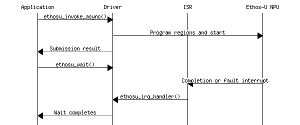

|
Ethos-U Integration for Cortex-M
Ethos-U Driver Documentation
|

|
|
Ethos-U Integration for Cortex-M
Ethos-U Driver Documentation
|
|
This chapter is the technical reference for the Ethos-U driver interface.
The Ethos-U driver operations and features at a glance:
The input to the Ethos-U driver must provide:
The driver does not compile models, allocate the ML framework's tensor arena, choose a memory mode in vela.ini, or place sections in physical memory.
The driver is provided by the software pack ARM::Ethos-U and can be added to a CMSIS-based application as a software component. The pack also includes CMSIS-RTOS2 and cache-management interfaces as optional source templates.
The CMSIS-Ethos-U GitHub repository provides access to the source code for other build environments.
| File or directory | Content |
|---|---|
config/ | Configurable headers for the Generic U55, U65, and U85 component variants. |
include/ | Public driver, data-type, and PMU header files. |
src/ | Common driver and PMU implementations, NPU-specific device implementations, and private headers. |
zephyr/ | Metadata for using the driver as a Zephyr module. |
CMakeLists.txt | Build description for integrating or building the driver with CMake. |
README.md | Standalone build instructions and driver API examples. |
LICENSE.txt, SECURITY.md | License and security information for the driver source. |
The pack Arm::CMSIS-Ethos-U provides the software component ARM::Machine Learning:NPU Support:Ethos-U Driver in multiple variants. For using the driver add one variant of the component as shown below:
The driver API is defined in include/ethosu_driver.h with related types in include/ethosu_types.h.
| API Function | Description |
|---|---|
| ethosu_init(), ethosu_deinit() | initialize or remove an NPU instance |
| ethosu_invoke_v3() | invoke and wait synchronously |
| ethosu_invoke_async(), ethosu_wait() | submit asynchronously and poll or block |
| ethosu_irq_handler() | handle the target interrupt |
| ethosu_get_driver_version(), ethosu_get_hw_info() | inspect driver and hardware versions |
| ethosu_soft_reset() | recover the NPU from an error |
| ethosu_request_power(), ethosu_release_power() | manage power lifetime |
| ethosu_reserve_driver(), ethosu_release_driver() | reserve an instance in a multi-NPU system |
See Driver functions for the complete generated API and Driver structures for public data types.
The driver provides default implementations for platform-specific functions listed below. The default weak function implementation of the driver should be carefully review and overwritten when needed.
| API Function | When an overwrite is needed |
|---|---|
| ethosu_flush_dcache(), ethosu_invalidate_dcache() | CPU-cached memory is shared with the NPU and requires platform-specific cache maintenance. |
| ethosu_address_remap() | The CPU and NPU use different addresses for the same storage. |
| ethosu_config_select() | Memory-region attributes depend on the address or run-time placement. |
| Mutex and semaphore functions in Platform-specific functions | Multiple tasks or NPUs can use the driver and require platform-specific RTOS locking. |
| ethosu_inference_begin(), ethosu_inference_end() | Inference tracing, power control, or application callbacks are required. |
Cache policy, linker placement, and region configuration are system-level decisions. Detailed guidance is in the chapter Integration.
Inferences can be invoked in two manners: synchronously or asynchronously. The two types of invocation can be freely mixed in a single application.
A typical usage of the driver can be the following:
A typical usage of the driver can be the following:
Note that if ethosu_wait() is invoked from a different thread and concurrently with ethosu_invoke_async(), the user is responsible to guarantee that ethosu_wait() is called after a successful completion of ethosu_invoke_async(). Otherwise ethosu_wait() might fail and not actually wait for the inference completion.
The following simplified sequence diagram shows the asynchronous invocation:

In order to use a driver it first needs to be initialized by calling ethosu_init(), which also registers the handle in the list of available drivers. A driver can be torn down by using ethosu_deinit(), which also removes the driver from the list.
The correct mapping is one driver per NPU device. Note that the NPUs must have the same configuration, indeed the NPU configuration can be only one, which is defined at compile time.
The driver is structured in two main parts: the driver, which is responsible to provide an unified API to the user; and the device part, which deals with the details at the hardware level.
In order to do its task the driver needs a device implementation. There could be multiple device implementation for different hardware model and/or configurations. Note that the driver can be compiled to target only one NPU configuration by specializing the device part at compile time. ?? ToDo: how
For running the driver on Arm CPUs which are configured with data cache, certain caution must be taken to ensure cache coherency. The driver expects that cache clean/flush has been done by the user application before being invoked. The driver does provide a deprecated weakly linked function ethosu_flush_dcache() that could be overriden, causing the driver to cache flush/clean base pointers before each inference.
The driver also exposes a weakly linked symbol for cache invalidation called ethosu_invalidate_dcache(), that must be overriden when the data cache is used. After an inference completes on the NPU, the driver will call this function to invalidate the data cache, to ensure cache coherency.
Make sure that any base pointers used for flush/invalidation is aligned to the cache line size of your CPU, typically 32 bytes. Due to the uncertainty of tensor alignment, the driver only flushes/invalidates on base pointer level.
A simple example implementation for the weak functions, using CMSIS primitives could look like below:
The NPU contain memory attributes that should be set to match the settings used in the MPU configuration for the memories used. See NPU_MEM_ATTR_[0-3] for Ethos-U85 and the AXI_LIMIT[0-3]_MEM_TYPE for Ethos-U55/Ethos-U65 in corresponding src/ethosu_config_uX5.h files.
To ensure the correct functionality of the driver mutexes and semaphores are used internally. The default implementations of mutexes and semaphores are designed for a single-threaded baremetal environment. Hence for integration in environemnts where multi-threading is possible, e.g., RTOS, the user is responsible to provide implementation for mutexes and semaphores to be used by the driver.
The mutex and semaphores are used as synchronisation mechanisms and unless specified, the timeout is required to be 'forever'.
ToDo: remove references to CMake, review RTOS interface
The driver allows for an RTOS to set a timeout for the NPU interrupt semaphore. The timeout can be set with the CMake variable ETHOSU_INFERENCE_TIMEOUT, which is then used as timeout argument for the interrupt semaphore take call. Note that the unit is implementation defined, the value is shipped as is to the ethosu_semaphore_take() function and an override implementation should cast it to the appropriate type and/or convert it to the unit desired.
A macro ETHOSU_SEMAPHORE_WAIT_FOREVER is defined in the driver header file, and should be made sure to map to the RTOS' equivalent of 'no timeout/wait forever'. Inference timeout value defaults to this if left unset. The macro is used internally in the driver for the available NPU's, thus the driver does NOT support setting a timeout other than forever when waiting for an NPU to become available (global ethosu_semaphore).
The mutex and semaphore APIs are defined as weak linked functions that can be overridden by the user. The APIs are the usual ones and described below:
The driver provide weak linked functions as hooks to receive callbacks whenever an inference begins and ends. The user can override such functions when needed. To avoid memory leaks, any allocations done in ethosu_inference_begin() must be balanced by a corresponding free of the memory in ethosu_inference_end() callback.
The end callback will always be called if the begin callback has been called, including in the event of an interrupt semaphore take timeout.
Note that the void *user_arg pointer passed to ethosu_invoke_v3() or ethosu_invoke_async() is the same pointer passed to the ethosu_inference_begin() and ethosu_inference_end() callbacks. For example:
For a practical use of these callbacks, see the PMU example.
The selected driver component supplies a target-specific configuration file:
| Driver variant | Configuration file |
|---|---|
| Generic U55 | ethosu_config_u55.h |
| Generic U65 | ethosu_config_u65.h |
| Generic U85 | ethosu_config_u85.h |
For CMSIS based projects, the configuration header file is copied to the RTE directory from the pack locally to the project where one may modify the configuration defines. Each configuration define provides annotations for CMSIS Configuration Wizard and is guarded by #ifndef, so it may be changed on solution level as well.
The headers configure how the driver programs the NPU.
All three driver variants use the define NPU_QCONFIG and NPU_REGIONCFG_0 to NPU_REGIONCFG_7, but the selected value has target-specific meaning:
| Define | Configures Access |
|---|---|
NPU_QCONFIG | command-stream |
NPU_REGIONCFG_0..7 | constants/arena/cache |
On Ethos-U55 and Ethos-U65, the (?todo which value) value selects an AXI port, outstanding transaction counter, and AXI limit entry:
| Value | AXI path | Limit entry |
|---|---|---|
0 | AXI0, counter 0 | AXI_LIMIT0 |
1 | AXI0, counter 1 | AXI_LIMIT1 |
2 | AXI1, counter 2 | AXI_LIMIT2 |
3 | AXI1, counter 3 | AXI_LIMIT3 |
On Ethos-U85, the value selects MEM_ATTR0..3 which then specifies the AXI port, memory domain, and memory type.
Ethos-U55 and Ethos-U65 provide four independently configured limit entries:
AXI_LIMIT0 and AXI_LIMIT1 apply to the two AXI0 counters;AXI_LIMIT2 and AXI_LIMIT3 apply to the two AXI1 counters.Each entry has the following options:
| Option | Purpose |
|---|---|
AXI_LIMITx_MAX_BEATS_BYTES | boundary at which the NPU splits an AXI burst |
AXI_LIMITx_MEM_TYPE | AXI read and write cache attributes |
AXI_LIMITx_MAX_OUTSTANDING_READS | maximum outstanding read transactions |
AXI_LIMITx_MAX_OUTSTANDING_WRITES | maximum outstanding write transactions |
AXI_LIMITx_MAX_BEATS_BYTES limits the span of each burst to meet the boundary requirements of the AXI interconnect and memory system.
It can have the following values:
| Value | Burst Limit |
|---|---|
| 0 | 64 bytes |
| 1 or 2 | 128 bytes |
AXI_LIMITx_MEM_TYPE encoding is common to U55, U65, and the U85 MEM_ATTR entries:
| Value | Memory type |
|---|---|
0x0 | Device non-bufferable |
0x1 | Device bufferable |
0x2 | Normal non-cacheable, non-bufferable |
0x3 | Normal non-cacheable, bufferable |
0x4 | Write-through, no allocate |
0x5 | Write-through, read allocate |
0x6 | Write-through, write allocate |
0x7 | Write-through, read and write allocate |
0x8 | Write-back, no allocate |
0x9 | Write-back, read allocate |
0xA | Write-back, write allocate |
0xB | Write-back, read and write allocate |
The outstanding-transaction options configure the maximum number of outstanding AXI transactions,
| Option | U55 range | U65 range |
|---|---|---|
AXI_LIMITx_MAX_OUTSTANDING_READS | 1..32 | 1..64 |
AXI_LIMITx_MAX_OUTSTANDING_WRITES | 1..16 | 1..32 |
NPU_MAC_PWR_RAMP_CYCLES sets the interval between MAC-unit steps during power ramp-up and ramp-down:
| Value | Interval |
|---|---|
0..63 | 4 * NPU_MAC_PWR_RAMP_CYCLES NPU clock cycles |
Value 0 disabled ramping.
Ethos-U85 provides four memory-attribute entries configured by NPU_MEM_ATTR_0..3. Each option is an encoded byte:
| Bits | Field | Values |
|---|---|---|
[1:0] | memory domain | 0: non-shareable; 1: inner shareable; 2: outer shareable; 3: system |
[2] | AXI port | 0: SRAM; 1: EXT |
[3] | reserved | keep clear |
[7:4] | memory type | 0x0 to 0xB as listed in the memory-type table above |
NPU_QCONFIG and each NPU_REGIONCFG_x select one of these entries. Therefore, changing a NPU_MEM_ATTR_x option changes every command-stream or base-pointer access routed to that entry.
Ethos-U85 applies separate settings to the SRAM and EXT AXI ports:
| Option | Values | Purpose |
|---|---|---|
AXI_LIMIT_SRAM_MAX_OUTSTANDING_READ_M1 | 1..12 | maximum outstanding reads per SRAM port |
AXI_LIMIT_SRAM_MAX_OUTSTANDING_WRITE_M1 | 1..16 | maximum outstanding writes per SRAM port |
AXI_LIMIT_SRAM_MAX_BEATS | 0..2 | SRAM burst-split alignment |
AXI_LIMIT_EXT_MAX_OUTSTANDING_READ_M1 | 1..64 | maximum outstanding reads per EXT port |
AXI_LIMIT_EXT_MAX_OUTSTANDING_WRITE_M1 | 1..32 | maximum outstanding writes per EXT port |
AXI_LIMIT_EXT_MAX_BEATS | 0..2 | EXT burst-split alignment |
Either of *_MAX_BEATS defines can have the following values:
| Value | Burst Limit |
|---|---|
| 0 | 64 bytes |
| 1 | 128 bytes |
| 2 | 256 bytes |
meaning that an AXI burst that crosses the selected aligned boundary is split into multiple bursts.
ToDo: should ethosu_log.h be a configuration file? Add useful example.
The driver logging interface is implemented by the private header source/src/ethosu_log.h. It is a compile-time facility used by the driver and device implementation, rather than a runtime callback API. It provides the following printf-style macros:
| Macro | Output |
|---|---|
LOG() | An unprefixed message on stdout; no newline is added automatically. |
LOG_ERR() | An error on stderr, prefixed with E: and the source file and line. |
LOG_WARN() | A warning on stdout, prefixed with W:. |
LOG_INFO() | An informational message on stdout, prefixed with I:. |
LOG_DEBUG() | A debug message on stdout, prefixed with D: and the function name. |
ETHOSU_LOG_ENABLE enables or disables all driver logging and defaults to 1. ETHOSU_LOG_SEVERITY selects the most verbose severity that is compiled in: ETHOSU_LOG_ERR, ETHOSU_LOG_WARN, ETHOSU_LOG_INFO, or ETHOSU_LOG_DEBUG. The default is ETHOSU_LOG_WARN, which includes error and warning messages. LOG() is not filtered by severity, but is disabled by ETHOSU_LOG_ENABLE.
The macros write through the C library stdout and stderr streams. An embedded target must therefore retarget these streams to an available output, such as a UART, semihosting, or an ITM channel. If no output is required, disable logging to avoid pulling the formatted I/O implementation into the application.
For a CMake build, enable debug-level logging as follows:
The accepted CMake severity values are err, warning, info, and debug. For other build systems, define the equivalent macros while compiling the driver sources, for example:
The driver exposes the Ethos-U PMU through pmu_ethosu.h. The API supports a 64-bit cycle counter and programmable event counters. Ethos-U55 and Ethos-U65 builds provide four event counters; Ethos-U85 builds provide eight. Use ETHOSU_PMU_Get_NumEventCounters() when code must work with more than one Ethos-U target.
The target-specific enum ethosu_pmu_event_type lists the supported events. They include NPU and MAC activity or stalls, weight-decoder and activation-output activity, memory transactions and stalls, latency ranges, and ECC events. The available event names differ between Ethos-U55/U65 and Ethos-U85. Use the symbolic enum values with ETHOSU_PMU_Set_EVTYPER(); do not program hardware event numbers directly.
The main API groups are:
| API Function | Description |
|---|---|
| ETHOSU_PMU_Enable(), ETHOSU_PMU_Disable() | Enable or disable the PMU |
| ETHOSU_PMU_Set_EVTYPER(), ETHOSU_PMU_Get_EVTYPER() | Select an event |
| ETHOSU_PMU_CYCCNT_Reset(), ETHOSU_PMU_EVCNTR_ALL_Reset() | Reset counters |
| ETHOSU_PMU_CNTR_Enable(), ETHOSU_PMU_CNTR_Disable() | Enable or disable counters |
| ETHOSU_PMU_Get_CCNTR(), ETHOSU_PMU_Get_EVCNTR() | Read counters |
| ETHOSU_PMU_Get_CNTR_OVS(), ETHOSU_PMU_Set_CNTR_OVS(), ETHOSU_PMU_Set_CNTR_IRQ_Enable(), ETHOSU_PMU_Set_CNTR_IRQ_Disable() | Handle overflow |
Counter masks use ETHOSU_PMU_CNT1_Msk and the other event-counter masks, plus ETHOSU_PMU_CCNT_Msk for the cycle counter. Enabling the PMU requests NPU power; disabling it releases that request, so always pair the two operations.
Override ethosu_inference_begin() to select and reset events immediately before an inference, and override ethosu_inference_end() to read the counters and disable the PMU afterward. These callbacks receive the same user_arg that was passed to ethosu_invoke_v3() or ethosu_invoke_async(), which can identify where the results should be stored. PMU measurements are hardware observations; compare them with Vela compiler estimates, but do not treat the estimates as cycle-accurate measurements.
The Technical Reference Manual for each NPU provides the event encoding and a hardware-level description of what each event counts:
PMU_EVTYPER0..3 (Table 4-81 in PDF version).PMU_EVTYPER0..3 (Table 4-79 in PDF version)PMEVTYPER0..7 and the EV_TYPE tables.Use the event descriptions together with the following guidelines:
ETHOSU_PMU_NPU_ACTIVE counts cycles in which the NPU is running, while ETHOSU_PMU_NPU_IDLE counts cycles in which it is stopped. Use these events or the dedicated cycle counter as the baseline when comparing inferences.Event counters are 32-bit and can overflow during a long measurement. Check ETHOSU_PMU_Get_CNTR_OVS() when this is possible. Because only four or eight events can be measured at once, collect additional events in repeated runs with identical model, input, memory, and system settings.
The following example counts NPU-active and NPU-idle events and records the NPU cycle count for one inference. Pass a pointer to struct pmu_results as the user_arg to ethosu_invoke_v3() or ethosu_invoke_async(). The callbacks use ETHOSU_PMU_Get_NumEventCounters() so the same pattern can be extended with additional events on targets that provide more counters.
ToDo: does CMSIS-Debugger offer a dialog for Ethos_PMU?
Continue with the end-to-end Integration checklist before treating driver bring-up as complete.